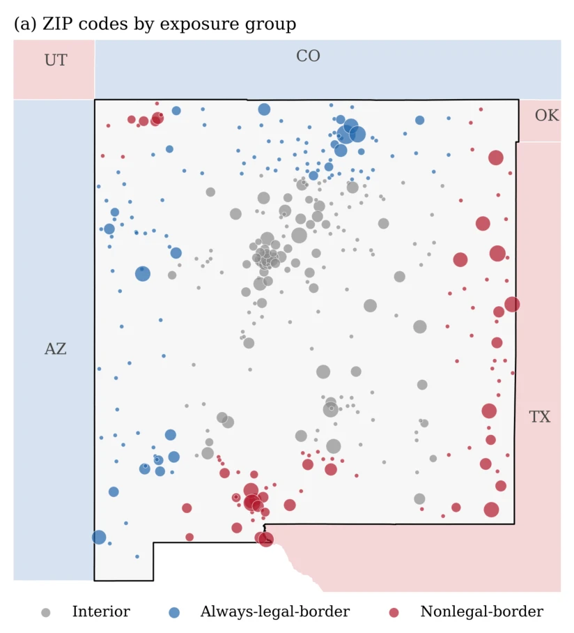
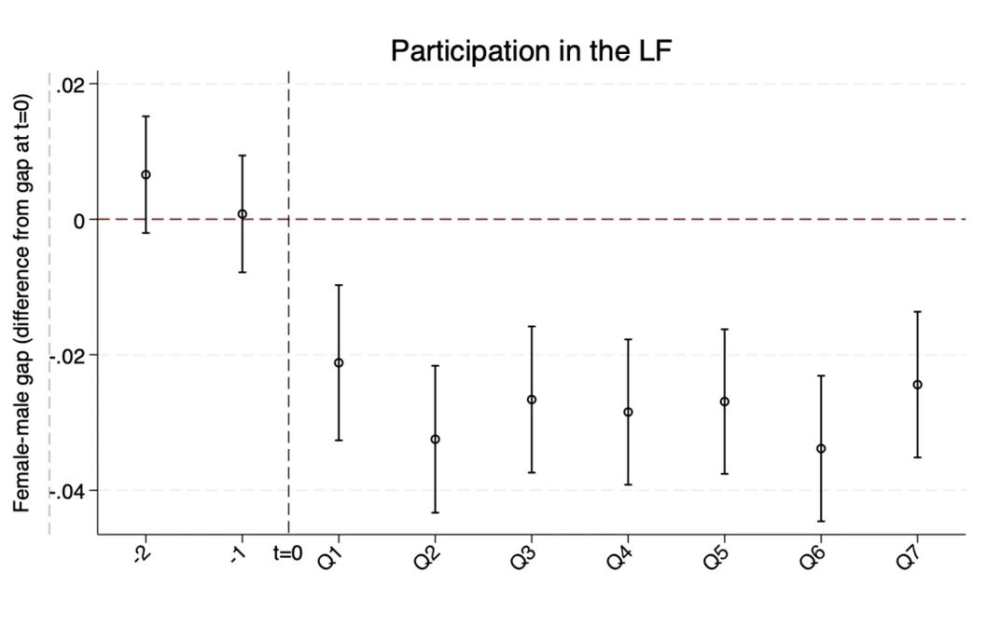

Welcome to my personal website!
I am a PhD candidate in Economics at Simon Fraser University in Canada, and I am on the 2026–2027 academic job market. My research interests are broadly in applied microeconomics, particularly spatial inequality, policy evaluation, and environmental economics. I have also worked as a researcher at Statistics Canada, where I gained experience working with data accessed through the Research Data Center (RDC).
Research Experience
Working Papers
-
More Stores or Bigger Stores? Cross-Border Demand and Retail Entry in New Mexico's Cannabis Market
PDF · (Replication package is available upon request)
Abstract
When a retail market gains customers, who captures the additional demand: existing stores or new entrants? I study New Mexico's recreational cannabis market, which opened in April 2022 without a statewide cap on retail licences. Dispensaries near Texas, Oklahoma, and Utah could attract consumers from states without legal recreational sales, while those near Colorado and Arizona faced consumers with legal alternatives at home. Using storefront-level sales and ownership records from 2022 to 2026, I find that markets exposed to captive cross-border demand generate 2.4 times as much revenue and support nearly twice as many dispensaries, conditional on resident population. Greater store density accounts for roughly three-quarters of the revenue gap. Chains initially appear to capture this opportunity first, but their advantage largely reflects medical dispensaries already operating when recreational sales began. An estimated model of entry and market adjustment reproduces these patterns. When entry is relatively open, additional demand is accommodated mainly through new retail capacity rather than persistently higher sales at existing stores.

Legal vs non-legal borders. Each circle shows dispensary density in one ZIP code; larger circles mean higher density. Red: near Texas, Oklahoma and Utah, where recreational cannabis is not legal. Blue: near Colorado and Arizona, where it is legal. Grey: interior. -
Where Have All the Mothers Gone? COVID and Mothers Leaving the Labor Force in Egypt
Abstract
We examine the impact of the COVID-19 pandemic on gender gaps in labour market outcomes in Egypt, where female participation has chronically been low. We use the closure of schools and childcare centres to identify the effect on workers directly affected by these measures: working mothers of school-age children. Using the Egypt Labor Force Surveys (2018–2021), a difference-in-differences approach shows a significant widening of gender gaps in participation and weekly hours worked after the pandemic. A triple-difference design focusing on mothers, with men and childless women as control groups, shows that the deterioration in women's outcomes was driven primarily by a reduction in mothers' labour supply at both the intensive and extensive margins.

Event: start of COVID-19. The dashed vertical line (t = 0) is the first quarter of 2020, just before schools and daycares closed. Points to the left are 2018 and 2019; points to the right are each quarter from 2020 Q2 to 2021 Q4. Below zero means women's participation fell relative to men's. -
The Application Gap: Why Small Counties Receive Fewer Federal Disaster Mitigation Grants
PDF · (Replication package is available upon request)
Abstract
Federal grants can help communities reduce damage from future disasters, but receiving these funds often depends on whether local governments apply. This paper examines whether smaller counties are less likely to access funding through the Hazard Mitigation Grant Program (HMGP). Using 12,081 county–disaster declaration observations covering 2,767 counties and 736 tornado and severe-storm declarations between 1999 and 2021, and records of both successful and unsuccessful applications, I compare counties included in the same declaration. The smallest third of counties are 8.8 percentage points less likely to receive an HMGP project than larger counties, whose funding rate is 27.1%. The difference arises mainly because smaller counties apply less often, not because their applications are more often rejected. Fewer eligible local governments account for about two-fifths of the gap; fiscal resources do not explain the rest, and a federal reform reimbursing grant-management costs did not measurably reduce it. The gap is smaller in states where state agencies submit a larger share of applications.
-
Beyond the Capital: Diverging Rents and Sale Prices During Conflict in Iran
PDF · (Replication package is available upon request)
Abstract
Conflict-related population movements may change housing demand in receiving cities, but rents and sale prices may respond differently. Using online listings from 2024 to October 2026 and hedonic difference-in-differences models, I compare directly exposed neighbourhoods in Tehran with nearby areas, and four Caspian coastal cities. Caspian asking rents rose by 27 per cent relative to Tehran and Alborz and 31 per cent relative to inland cities; the premium later eased, and adjusting for differential trends roughly halves the estimated increase. Caspian sale asking prices showed no comparable increase relative to inland cities. Directly exposed Tehran neighbourhoods showed no detectable discount. The data record asking rather than transaction prices.
-
More Education, Worse Matches? University Expansion and Occupational Allocation in Iran
PDF · (Replication package is available upon request)
Abstract
This paper examines how Iran's higher-education expansion relates to education–job matching. Using 18 waves of the Iranian Labor Force Survey (2007–2024), we exploit within-province cohort variation in exposure to university enrollment at ages 18–20. Greater exposure does not predict attainment or labour-market participation but is associated with poorer matching among employed workers. A 10 percent increase in exposure predicts 0.61 and 0.69 percentage-point increases in horizontal and double mismatch, respectively, and a 0.34 percentage-point decline in fully matched employment. These relationships are stronger for men, suggesting that expansion mainly affects the types of jobs educated workers hold.


Work in Progress
-
Not Too Hot to Run: Adaptation to Extreme Heat in Competitive Runners
PDF · Discussion paper · (Replication package is available upon request)
Abstract
This paper examines how adaptation shapes the impact of extreme heat on labour productivity. We use global data on competitive runners, combined with high-resolution weather information, to estimate how race-day heat affects running speed. Consistent with adaptation, we find that runners from hotter countries are significantly less affected by extreme temperatures. The performance gap is most pronounced in endurance events and narrows in high-stakes races, suggesting that both physiological factors and incentives may play a role. Our findings provide evidence that prior exposure reduces sensitivity to heat.
Other Projects
-
Regional Variation in Modern Greek Lateral Palatalization: Evidence from Immigrants to Canada
Draft available upon request · (Replication package is available upon request)
Abstract
This study introduces two tools for Greek dialectological research, the Immigrec Spoken Corpus and the Immigrec Data Annotation Pipeline, through examining lateral palatalization and its cross-dialectal distribution in Modern Greek. The corpus documents speech of Greeks who immigrated to Canada in the 1950s–60s, before palatal variants became stigmatized in Greece. Using force-aligned excerpts from 61 speakers across seven regions, we analyzed /l/ before /j, i, e, a, o, u/. Palatalization was quantified as the F2 − F1 difference at token midpoint and modelled with Bayesian mixed-effects regression, including following segment, region, gender, and their interactions as predictors. Results show a strong segment-by-region interaction: /j/ and /i/ trigger similar palatalization effects in Central, Northern, and Thessalian varieties, but /i/ is a weaker trigger than /j/ elsewhere. Gender also interacts with region, as in some areas women appear to be leading the change away from the regional pattern, suggesting a sociolinguistic change from above. Overall, lateral palatalization varies systematically across dialects and seems to have acquired social meaning by the 1950s.
Resting Papers
-
Water and Agriculture: Evidence from Subsistence Farmers in Peru
Abstract
This paper examines the impact of access to water sources, such as rainfall or irrigation water, on agricultural outcomes for subsistence farmers. Using microdata from Peruvian households and a novel reanalysis dataset on precipitation, we document a positive effect of rainfall on agricultural output, driven mainly by increased input use. We also document impacts on crop mix and child labour, and find suggestive evidence that formal, secure access to other water sources, such as irrigation, benefits agricultural production. Funded by the World Bank.
Education
- 09/2022–12/2026 (expected) PhD in Economics, Simon Fraser University
- 09/2020–09/2021 MA in Economics, Simon Fraser University
- 09/2016–09/2019 MS in Economics, Sharif University of Technology
- 09/2010–09/2015 BS in Industrial Engineering, minor in Applied Mathematics, Sharif University of Technology
Appointments
- 2025–present Researcher, Statistics Canada
- 2022–2025 Research Assistant, Department of Economics, Simon Fraser University
- 2022–2025 Teaching Assistant and Head Teaching Assistant, Simon Fraser University
Honors and Awards
- 2024, 2026 Lang Wong Memorial Endowment Scholarship in Economics, Simon Fraser University
- 2024 President's PhD Scholarship, Simon Fraser University
- 2023–2025 (multiple terms) PhD Research Scholarship, Simon Fraser University
- 2022, 2024, 2025 Graduate Fellowship, Simon Fraser University
- 2021 Research Grant Stipend, Simon Fraser University
- 2020 Special Graduate Entrance Scholarship, Simon Fraser University